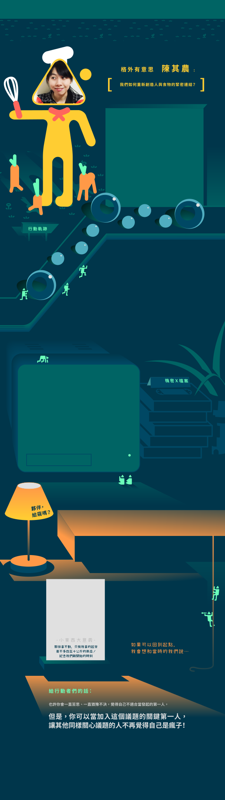

分享這片土地的好「食」光——格外有意思
大學的最後一學期，因為受一門社會創新的課程啟發，兩位台大女生從食物浪費的議題出發，創辦了格外有意思，希望藉「格外品」作為窗口，翻轉人們對食物外貌的單一想像，重新建立起人與食物之間的連結。除了設計實際動手做的工作坊，格外好意思也與一群關注地方發展及在地文化保存的社區規劃師，現於台北市萬華駐點，打造社區的共同廚房，開始經營社區食物分享空間，集結大家的力量創造這塊土地的更多可能性。
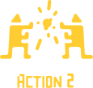
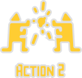
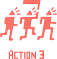
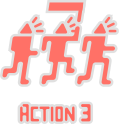
點擊不同的軌跡查看行動夥伴的故事！
行動軌跡 - Action 1
在就讀台大的最後一學期，其農聽了學長姐們的口碑，旁聽「社會經濟組織的創新與設計」這堂課，期末時需要透過所學，設計一個能解決社會問題的經濟組織。透過每周的討論、報告、修正，不只認識了一起行動的好夥伴馨妤，更驚覺農業是人們最踏進土地的媒介，但同時也是傷害土地最多的一個方式。
當時的其農和馨妤在書中看到了北投農夫們與大學結合的案例大感好奇，於是決定要實地去拜訪農夫、認識原本不熟悉的產業和人們，試圖了解在農田中是不是真的有如他們想像，有「格外品」的出現？
到了農田以後發現，雖然真的有格外品，但實際情況和預想的完全不同！當周回來後，課堂報告的內容大幅修改，調整成以食農教育為主，包括可能和哪些學校合作、如何包裝課程。其農說：「還沒有能力解決的問題，只能先從別的地方下手囉！」雖然用這樣的結論畢業了，其農和馨妤仍然持續行動，用不同的活動將食農教育帶入其中。
行動軌跡 - Action 2
雖然現在有許多人稱呼這些不能放到市面上的食物們為醜蔬果，但如何定義食物的美或醜？「不妨將這些食物們都稱之為格外品－規格之外的產品，這些食物多有意思啊！各自都有其獨特的風貌，何況有意思的不只是食物本身，他們是能讓每天的生活更多采多姿的小傢伙，食物的多樣性就在於它的風味、不同的樣貌，給我們視覺上的饗宴，因此有了『格外有意思』這個名字。」
即便農業問題不勝枚舉，沒辦法立即解決的問題並不是憑一己之力就可以使之消失的；然而格外有意思會告訴大家：「如果每個人都能拯救5公斤的蔬果，那就有2300萬人乘以5公斤了！」格外有意思並不是要自己去拯救一千噸、那些每年都被浪費的蔬果，而是希望能從讓大家認識有意思的格外品開始，進而號召大家起來正視這個的議題，真正地做到食農教育。
行動軌跡 - Action 3
成立兩年的格外有意思，即使現存規模並不十分壯大，卻能在一步一步的行動之中不斷尋找自己更適合的定位。從一開始發散地著墨於食物浪費的問題上，漸從自己頗有心得的教育面下手，成為致力推動食農教育的團隊，到現在能夠在農夫市集、工作坊上小量販售自己的加工產品，對於每一次改變行動的轉折，其農都以「迷路也是一條路」來自勉，在接近真實答案的路途中，迷路很好的經驗！
現在的格外有意思定期舉辦工作坊，也配合許多社區、政府的計畫開了有系統且長期性的課程，課程規劃力求讓大家能更貼近「真正的問題」來尋找「真正的解法」，不斷挑戰新的創意，讓「格外品不只是格外品」，其農也很謙虛地說道，理念不是一成不便地，未來的路上，仍會不斷地修正、讓這巨大的問題，能一點一點地被解決。
Q：即使格外有意思並不穩定，畢業後怎麼維持自己的生活開銷？
A：
我們並沒有經過比較大的掙扎，像我們兩個人跟家人的溝通都比較沒有問題，所以都沒有因為家人的反對，或者是很直接的經濟的因素，而沒辦法很全心的投入，像馨妤他還是有繼續做家教，只是當然沒有法律系畢業的人會有的薪水，但是基本上她的生活開銷是 ok 的。當然格外有意思有辦法做得起來就是他另外的事業這樣。
然後對我來說，我也有接一些像是在主婦聯盟之類的工作，所以這些工作機會除了是讓格外有意思有更多觸角的機會，也是我當時的收入來源。應該說我們想辦法讓生活無虞。像我在主婦聯盟的工作是一個禮拜只要去兩天，那是我可以自己安排的時間，所以基本上我全職都是在做格外有意思，只是需要再多一個兩天的收入，讓我每個月的 routine 是可以繼續的，馨妤也是類似這樣。
Q：讓問題意識開始變得具體的轉捩點是甚麼？
A：
一開始很天真地想，這些食材就只是賣相不好而已，或許我們可以幫這些食材做一點簡單的加工，再搭上現在流行的野餐，向別人說「這是一個不會 NG 的野餐，因為你用的是不 NG 的醜蔬果」。
可是實際去到北投的農場，就發現不是那麼容易。有一個農夫跟我們說：「喔你們來的正是時候！我們農場有非常多的南瓜是沒辦法拿去賣的」，那時候已經是學期的中後段了，也就是南瓜盛產季之後、又剛好很多颱風的時候；所以我跟馨妤心想「沒問題！」，就帶了兩個大袋子，搭捷運到石牌再轉公車到那邊的農田。
到了現場發現說，這個南瓜還真的不是普通的大，南瓜都裝在那種藍色、塑膠的水果籃裡，馨妤拿不起一整個籃子，所以我們把一顆一顆南瓜拿起來裝進袋子，但腰真的快斷了。對我們來說非常大的衝擊就是，實際接觸後，這個問題比我們想像中的更大，光是小小的 50 斤我們就拿不動了，何況是一個農田可能就有一公噸？意識到這是我們沒辦法做的，回去才又重新修正方向。
Q：有什麼比較大的轉折，讓現在的團隊和當初不太一樣？
A：
當時的轉捩點是，我遇到了我的國中朋友，他是個非常想成為糕點師傅的一個年輕女生，然後他認為格外品有可能成為非常好的糕點食材，讓蛋糕、麵包有更積極的變化，當然他也是一種「哇！那我們來幫忙你們好了！」的想法；因為有她的技術投入，所以讓我們有機會在工作坊裡面做一些蛋糕、點心。
我們沒想到那麼早就會有自己的產品，當時覺得先做一陣子教育，累積更好的能力之後再說，可是因為她我們可以用格外品做一些蛋糕拿到農夫市集去販賣，可能這週跟隔壁的農夫買了格外品，下周我們就做成蛋糕再拿來擺攤。當我們想做這件事情的時候，會有很多意想不到的朋友，他也看到這件事情覺得有趣，會願意一起來協助，雖然當時她的薪水是超級低的，賣到多少就會給她多少這樣。
雖然幫忙不是恆久的，但能讓這個團隊有更多的彈性跟可能性，也因為這個人，讓我們跟農夫不會只有消費跟生產的關係而已，而是彼此合作的夥伴，有一家人的感覺。我覺得這是一個很重要的轉捩點。
Q：讓問題意識開始變得具體的轉捩點是甚麼？
A：
這個議題接觸越來越多，就會遇到一些前輩來和我們討論，事實上農業有非常多問題，那為甚麼我們不是從那些開始做？格外品只是一個末端的結果而已。比方說，我們非常尊重的前輩－好食機的老闆就說：「其農，你們團隊真的很不錯，但為甚麼只做食物浪費?」我就說：「我覺得我們一個團隊不能做所有事情啊」然後他就說：「可是你不覺得格外品就是一個假議題嗎？」那時候就覺得非常shock，怎麼辦？前輩跟我說這是一個假議題。
但前輩提出來的問題其實是：有機、友善的格外品並不是格外品問題，而是並沒有一個集中市場可以來集中處理，因為只要可以集中，就可以降低處理的成本。不需要一一請農夫寄給大榮貨運處理，每個都是一百五起跳，可能都比寄好的蔬果還貴。
這也是當時我覺得一個很需要挑戰的地方，要如何在過程中不斷彈性地去調整一個團隊。就算是方向跟理念也可能都需要被調整，那都是可以讓團隊更好的地方，畢竟我們不可能在一個對事情一知半解的狀態下，用我們想像的方式去解決我們想像出來的問題。
Q：用 6000 元採取的第一步行動
A：

Q：為什麼會這樣分配
A：
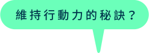
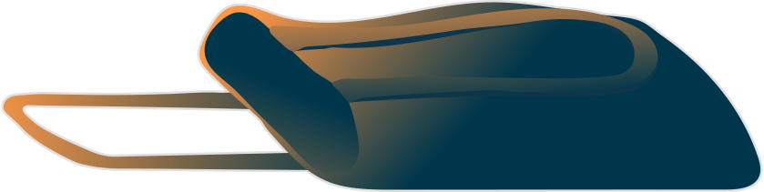
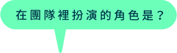
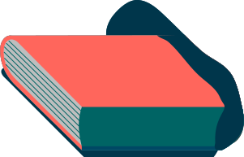
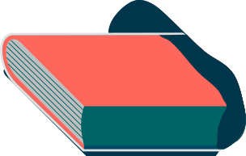
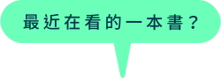
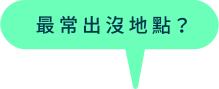
A：變胖（職業傷害）
A：吃東西
猜猜看，行動夥伴隨身的包包裡有些什麼法寶？點擊揭曉
A：搞笑的人、大飯桶（吃東西吃最多的人）
A：吃的美德：餐桌上的哲學思考
A：好多噢！台北城市散步好了，他們最近有些活動幫他們做宣傳。
A：農場、我家、工廠
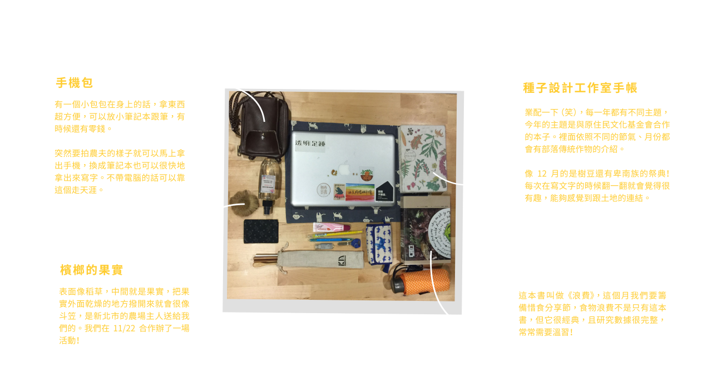
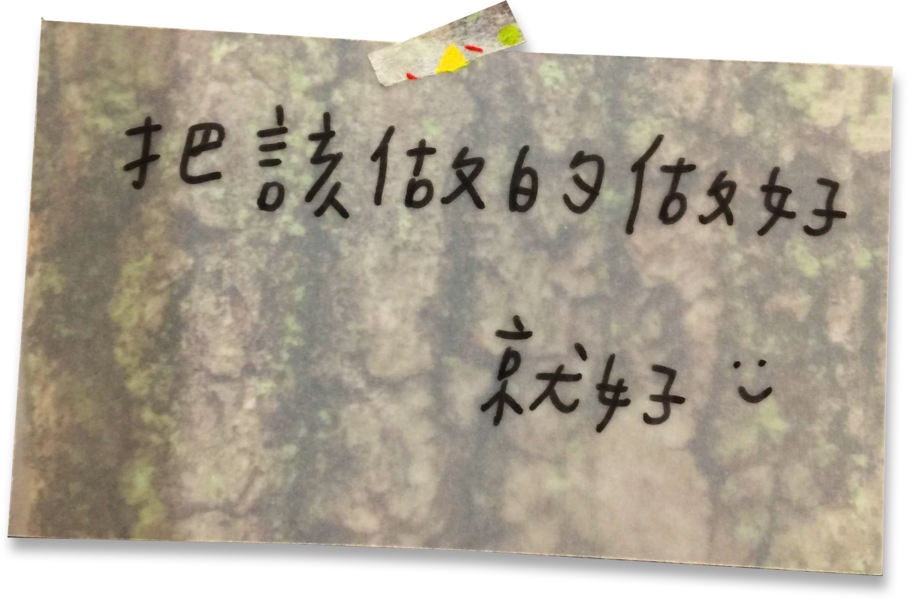
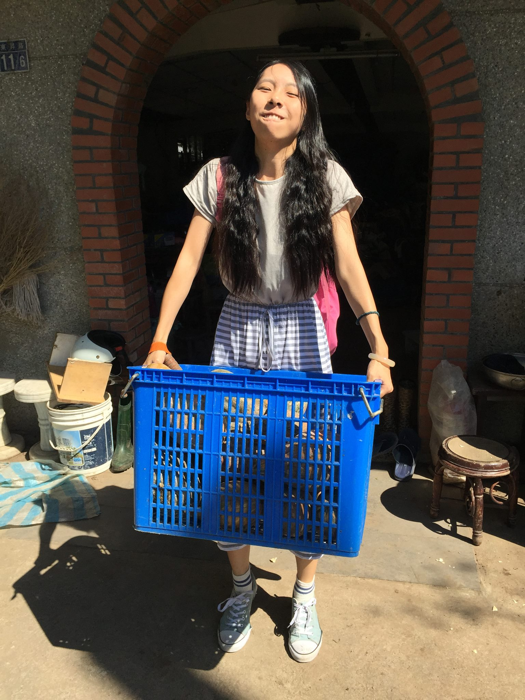